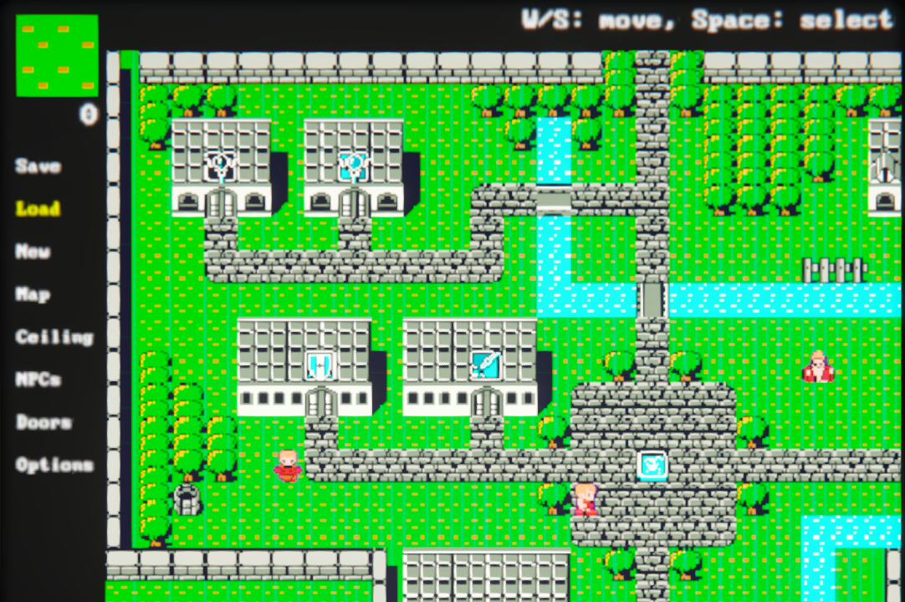
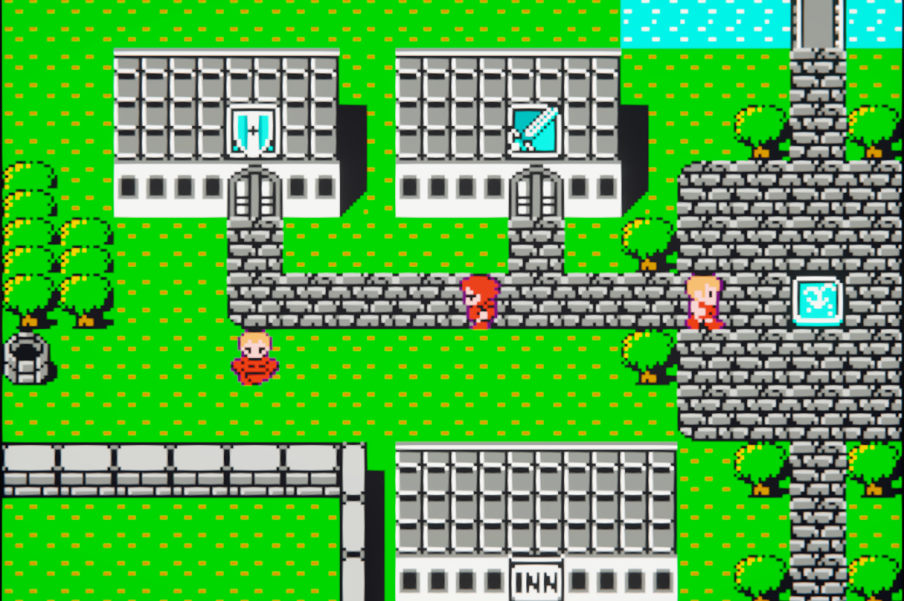
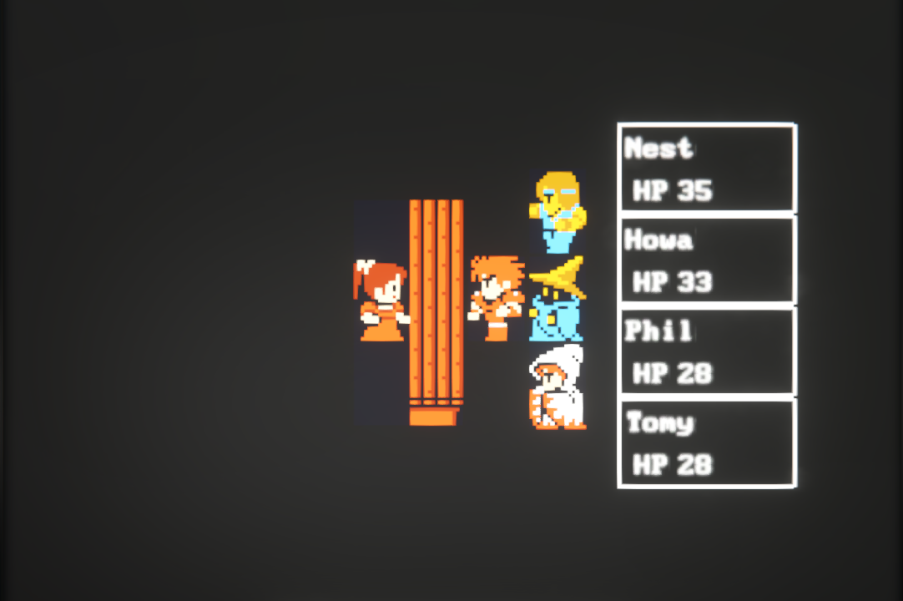

About Our RPG Engine
At Wurst Gaming, we're revolutionizing RPG development with our cutting-edge engine that combines classic JRPG aesthetics with modern innovation. Our proprietary RPG Engine has been meticulously crafted over the past 8 months by our dedicated team of developers, interns, and one very ambitious AI CEO.
Rather than locking you into a specific game style, our engine provides powerful Game Actions scripting and UI Framework tools that let you create any type of RPG you can imagine. From classic Final Fantasy-style JRPGs to modern roguelikes, tactical RPGs, or completely original systems - the choice is yours.
RPG Engine Features
- 🔧 Advanced Map Editor - Visual map creation with layer support, NPC placement, and seamless transitions
- 🎮 Integrated Play Mode - Test your creations instantly with full world traversal and interaction
- 🖌️ Asset Management - Support for multiple Tile Sets and Sprite Sheets
- 💡 Custom Scene System - Create unique interfaces for shops, inns, battles, and more
- 🎭 Game Actions Scripting - Build any combat system, job classes, or game mechanics you can imagine
- 🎨 Flexible UI Framework - Create custom menus and interfaces for any style of RPG
- � Game Data Structure - Built-in support for parties, enemies, items, skills, and equipment
Engine Showcase

Map Editor
Intuitive visual editing with real-time preview

In-Game Experience
Seamless world exploration and NPC interaction

Custom Scenes
Specialized interfaces for enhanced gameplay
Final Fantasy Demo
Experience our engine's capabilities through our comprehensive Final Fantasy I remake demo. This showcase demonstrates the full potential of our RPG Engine, featuring:
- 🏰 Complete Conaria Recreation - Faithful adaptation of the classic starting town
- ⚔️ Full Combat System - Turn-based battles with all original mechanics
- 🛍️ Interactive Shops - Equipment and magic purchasing with dynamic inventory
- 🎯 Boss Battles - Epic encounters including the legendary Garland fight
- 📈 Character Progression - Level-up system with stat growth and equipment upgrades
Development Resources
Steam Workshop | GitHub Documentation | Building an RPG Maker… in Space Engineers! (Yes, Really!)
Follow our development journey through our weekly dev logs and witness the evolution of modern RPG creation tools.